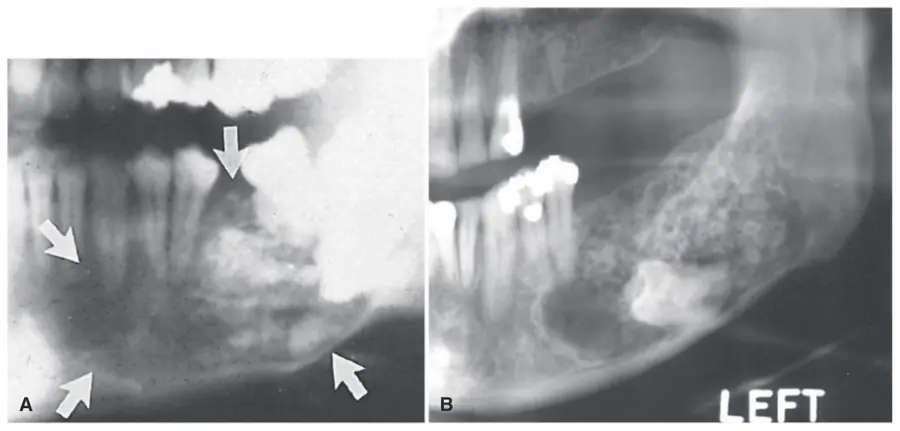
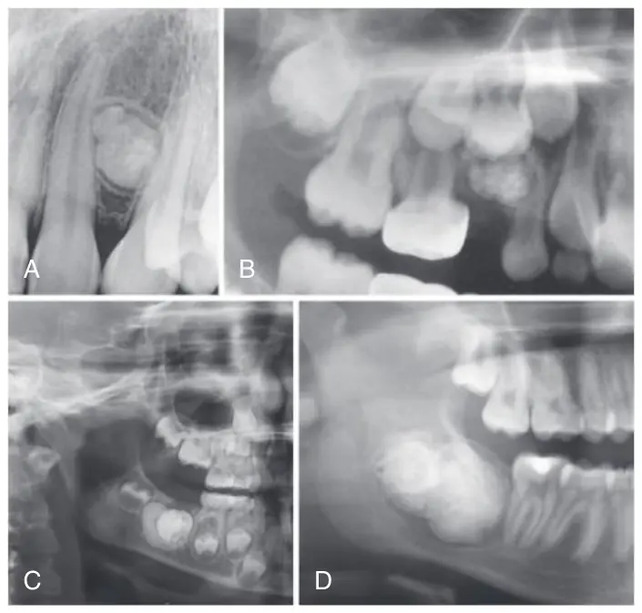

نسخه استخراجشده؛ ترجمه یا تأیید علمی انجام نشده است. وضعیت: captured
تومور ادنتوژنیک اپیتلیالی کلسیفیه (CEOT) — نئوپلاسمی بسیار نادر که حدود ۱٪ نئوپلاسمهای ادنتوژنیک را میسازد. سلولهایش میتوانند هم ماتریکس مینرالیزه بسازند و هم آمیلوئید.

سن و رفتار: کمتهاجمیتر از آملوبلاستوما، ولی در گروه سنی مشابه: میانگین حدود ۴۲ سال. اتساع فک ویژگی همیشگی و معمولاً تنها علامت است؛ لمس، تودهای سفت نشان میدهد.
محل و دو عدد کلیدی: مانند آملوبلاستوما بیشتر در مندیبل، با نسبت دستکم ۲ به ۱؛ بیشتر در ناحیهی پرمولر و مولر. و حدود ۵۲٪ با یک دندان نهفته یا ایمپکت همراهاند. در حدود نیمی از موارد، تصویر مراحل اولیه یک ناحیهی رادیولوسنت مرتبط با تاج یک دندان نهفتهی بالغ را نشان میدهد.
و مشخصهترین یافتهی CEOT: اوپسیتههای داخلی با اندازه و دانسیتههای متغیر که برخی شکل هلالی یا دونات با مرکز رادیولوسنت دارند — و مهمتر، «ظاهر شدن اوپسیتهها نزدیک تاج دندان درگیر». ترابکولهای اوپک میتوانند رادیولوسنسی را در جهتهای گوناگون قطع کنند.
و درمانش: رزکشن موضعی — رویکردی محافظهکارانهتر از آملوبلاستوما.
آملوبلاستیک فیبروما — تکثیر مختلط اپیتلیوم ادنتوژنیک و مزانشیم اولیه شبیه پاپیلای دندانی؛ و نکتهی تعریفی مهم: این سلولها ماتریکس مینرالیزه رسوب نمیدهند.
سن: دههی اول و دوم، در دورهی تشکیل دندان، با میانگین حدود ۱۵ سال. محل: اغلب مندیبل خلفی، کرونال به یک دندان نهفته. ساختار داخلی: بیشتر کاملاً رادیولوسنت و تکحفرهای. درمان: انوکلیشن جراحی محافظهکارانه و کورتاژ مکانیکی، بدون عود.
و سه افتراق آملوبلاستیک فیبروما: از فولیکول هیپرپلاستیک و کیست دنتیجروس کوچک ممکن است قابل تفکیک نباشد، از آملوبلاستوما با سن کمتر و سپتاهای نادر و بسیار ظریف در برابر سپتاهای واضح و درشت آملوبلاستوما، و از میکزوم با نبود سپتاهای تیز و مستقیم و با گروه سنی جوانتر.
یک تغییر واژگانی آگاهانه: آنچه پیشتر «اودونتوما» نامیده میشد، امروز هامارتوم در نظر گرفته میشود — «تولید مینا، عاج، سمان و بافت پالپ بالغ، ولی بدون ظرفیت رشد پیوسته». به همین دلیل «اودونتوم» نامیده میشود، و آنچه «آملوبلاستیک فیبرو-اودونتوما» بود حالا «اودونتوم در حال تکامل» نام دارد.

مانند دندان اضافه، اودونتوم هم از مازاد لامینا دنتال میآید — همان منشأی که پیشتر در دندانهای اضافه دیدی.
و سه نوعش: کمپلکس (تودهی ناهمگون و بیشکل از بافتهای سخت دندانی)، کمپاند (چند دندانک یا denticle خوشساخت)، و دیلیتد (همان اودونتوم متسع که پیشتر بهعنوان شدیدترین شکل دنس اینواژیناتوس دیدی).
و اعداد محلی که تشخیص را جهت میدهند: کمپاند حدود دو برابر کمپلکس شایع است. ۶۲٪ اودونتومهای کمپاند در ماگزیلای قدامی و همراه با تاج کانین نهفته؛ در مقابل ۷۰٪ اودونتومهای کمپلکس در ناحیهی مولر اول و دوم مندیبل. و ۶۰٪ اودونتومهای کمپلکس در زنان رخ میدهند.
و نشانهی تصویریای که اودونتوم را از هر اوپسیتهی دیگری جدا میکند: «مؤلفهی مینرالیزهی اودونتوم با یک حاشیهی رادیولوسنت نازک احاطه شده است» — درست مانند فضای فولیکولی دور تاج یک دندان. و جزیرهی استخوانی متراکم (DBI) با آنکه رادیواوپک است، این حلقهی رادیولوسنت را ندارد.
و دو افتراق دیگر: از فیبروم سمنتو-اوسیفایه با همراهی با دندان نهفته و با اوپکتر بودن (چون مادهی دندانی بالغ دارد)، و از مرحلهی بالغ دیسپلازی سمنتو-اوسئوس پریاپیکال، که چندکانونی با اپیسنتر در آپکس ریشههاست و از استخوان دیسپلاستیک ساخته شده که کمتر اوپک است.
و اثرش بر دندان: ۷۰٪ اودونتومها با دندان ایمپکت یا بدجا، دیاستم، آپلازی، بدشکلی یا دویتالیزاسیون دندانهای مجاور همراهاند. درمان: برداشت ساده، بدون عود.
و تومور ادنتوژنیک آدنوماتوئید (AOT) — نئوپلاسم غیرتهاجمی که حدود ۳٪ نئوپلاسمهای دهانی را میسازد. دو نوع مرکزی دارد: فولیکولار (همراه با تاج دندان نهفته) و اکسترافولیکولار؛ حدود ۷۳٪ ضایعات مرکزی از نوع فولیکولارند.
و سه عدد که AOT را میسازند: میانگین سن ۱۶ سال (اکثریت در دههی دوم)، ترجیح زنان ۲ به ۱، و دستکم ۷۵٪ در ناحیهی قدامی فکها، با ناحیهی کانین بهعنوان شایعترین محل.
و مهمترین نکتهی افتراقی AOT از کیست دنتیجروس: وقتی AOT با یک دندان ایمپکت — اغلب کانین — همراه است، «ممکن است اغلب با محل اتصال مینا و سمان ارتباط نداشته باشد»؛ اگر رادیولوسنسی آپیکالتر از CEJ باشد، کیست دنتیجروس کنار میرود. ساختار داخلی در تا دو سوم موارد مختلط است: از اوپسیتههای ظریف و کمرنگ تا خوشههای متراکم. درمان: برداشت محافظهکارانه، با نرخ عود بسیار پایین حدود ۰٫۲٪.